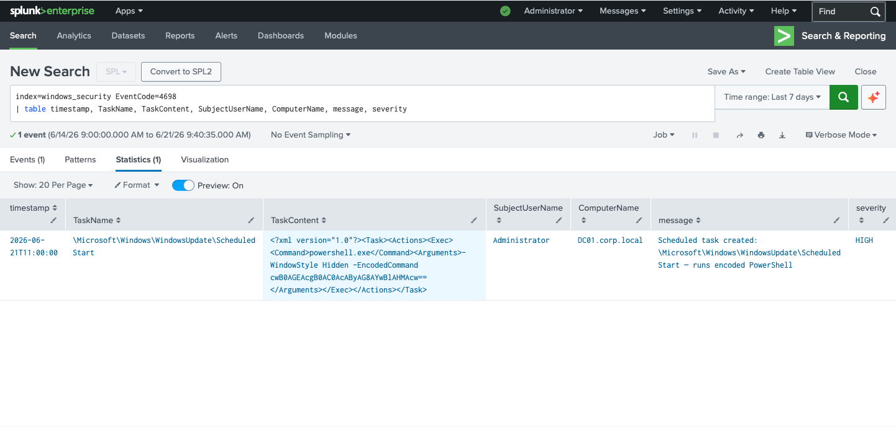
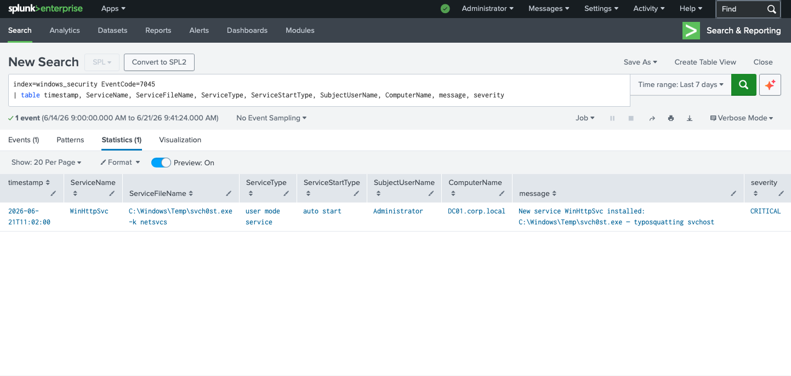
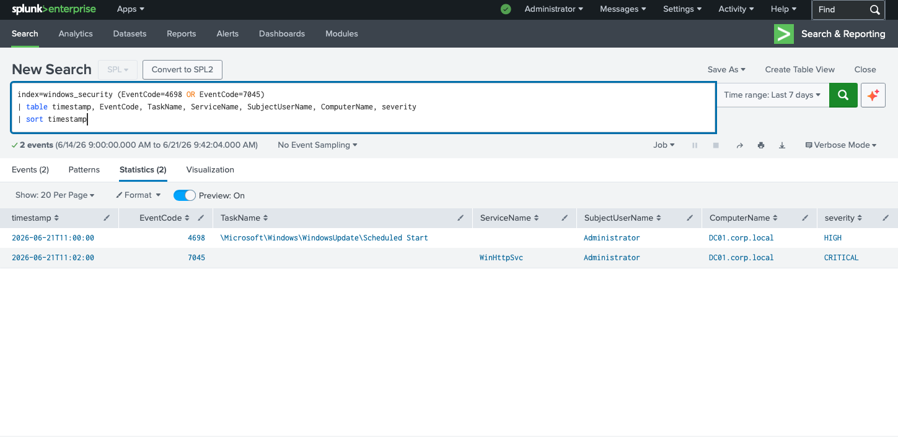

Was ist Persistence?
Nach einer erfolgreichen Kompromittierung besteht das nächste Ziel des Angreifers darin, den Zugang zu sichern — auch wenn das ursprünglich kompromittierte Konto gesperrt, das Passwort geändert oder der Angreifer entdeckt wird. Persistence bedeutet: der Angreifer bleibt im System, egal was passiert.
In diesem Szenario setzt der Angreifer zwei klassische Windows-Persistence-Techniken ein: einen Scheduled Task (MITRE ATT&CK T1053.005) und einen Windows Service (MITRE ATT&CK T1543.003) — beide auf dem Domain Controller DC01.corp.local.
Warum zwei Mechanismen? Redundanz ist Absicht. Wird der Scheduled Task entdeckt und entfernt, bleibt der Service aktiv — und umgekehrt. Professionelle Angreifer setzen immer mehrere Backdoors gleichzeitig.
Angriffsablauf
Erkannte Event IDs
Analyse — Schritt 1: Scheduled Task mit encoded PowerShell (4698)
EventID 4698 wird ausgelöst, wenn ein neuer Scheduled Task erstellt wird.
Entscheidend ist hier der TaskContent: Der Task führt
powershell.exe mit dem Flag -WindowStyle Hidden
(kein sichtbares Fenster) und -EncodedCommand aus —
ein klassisches Zeichen für einen obfuskierten Payload.

// EventID 4698 — Scheduled Task mit -EncodedCommand PowerShell Payload — Administrator — DC01.corp.local — Severity: HIGH
Drei Red Flags gleichzeitig:
(1) -WindowStyle Hidden — kein Fenster, kein sichtbarer Prozess
(2) -EncodedCommand — Base64-obfuskierter Payload, umgeht String-basierte Erkennung
(3) TaskName tarnt sich als Windows Update — legitim klingend, schwer auffällig
// Encoded Payload dekodieren
Der Base64-String cwB0AGEAcgB0AC0AcAByAG8AYWJsAHMAcw== ist
UTF-16LE-kodiert (Standard für PowerShell -EncodedCommand).
In einem echten Incident würde man den Payload sofort dekodieren:
SOC-Regel: Jeder Scheduled Task mit -EncodedCommand oder -enc in den Arguments sollte automatisch einen Alert auslösen. Legitime Windows-Tasks verwenden niemals Base64-kodierte Befehle.
Analyse — Schritt 2: Malicious Service mit Typosquatting (7045)
EventID 7045 (aus dem System-Log) zeigt einen neu installierten
Windows Service. Zwei Details machen diesen Event sofort verdächtig:
Der Binary-Pfad zeigt auf C:\Windows\Temp\ — kein legitimer
Windows-Service läuft aus dem Temp-Verzeichnis — und der Dateiname
svch0st.exe imitiert mit einer Null (0 statt o)
den legitimen Windows-Prozess svchost.exe.

// EventID 7045 — WinHttpSvc · svch0st.exe (typosquatting) · C:\Windows\Temp · auto start — Severity: CRITICAL
Vier CRITICAL Red Flags:
(1) C:\Windows\Temp\ — legitime Services laufen nie aus Temp
(2) svch0st.exe (0 statt o) — klassisches Typosquatting
(3) -k netsvcs — imitiert legitimes svchost-Argument
(4) auto start — überlebt jeden Reboot, keine manuelle Aktivierung nötig
// IOC-Übersicht
| IOC | Wert | Bewertung |
|---|---|---|
| ServiceName | WinHttpSvc | Legitim klingend — kein echter Windows Service |
| ServiceFileName | C:\Windows\Temp\svch0st.exe | CRITICAL — Temp-Pfad + Typosquatting |
| Argumente | -k netsvcs | Imitiert legitimes svchost-Flag |
| StartType | auto start | Überlebt Reboots — persistente Backdoor |
| ComputerName | DC01.corp.local | Domain Controller — höchstes Ziel |
Analyse — Schritt 3: Beide Persistence-Mechanismen kombiniert
Die kombinierte Abfrage zeigt beide Events im Zeitverlauf. Das 2-Minuten-Fenster (11:00 bis 11:02) bestätigt: der Angreifer führt ein vorbereitetes Skript aus — kein manueller, interaktiver Angreifer würde in 2 Minuten zwei Persistence-Mechanismen manuell einrichten.

// Persistence-Kette: 4698 (Scheduled Task) → 7045 (Malicious Service) — 2 Minuten — DC01.corp.local
Automatisiertes Angriffsskript: Zwei Persistence-Mechanismen in 2 Minuten weisen auf ein Post-Exploitation-Framework hin — z.B. Cobalt Strike, Metasploit oder ein Custom Implant. Der Angreifer führt vorgefertigte Payloads aus, nicht manuelle Befehle.
Incident Response — Was als nächstes?
Prävention — Application Allowlisting:
Mit Windows Defender Application Control (WDAC) oder
AppLocker kann verhindert werden, dass Binaries aus
C:\Windows\Temp\ überhaupt ausgeführt werden.
Auf Domain Controllern sollte dies zwingend aktiv sein —
ein DC führt niemals unbekannte Executables aus.